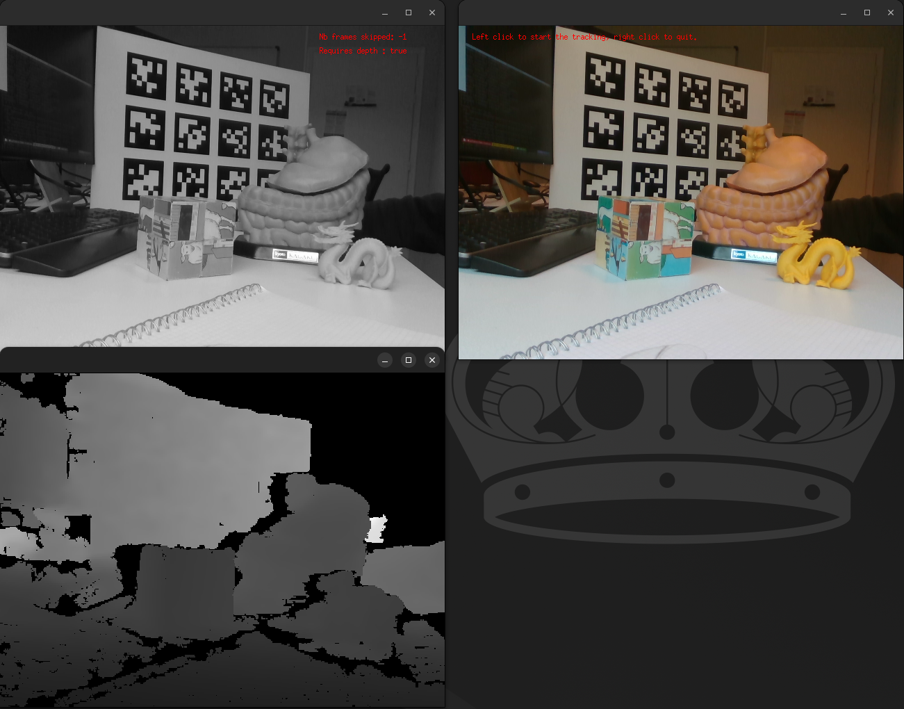
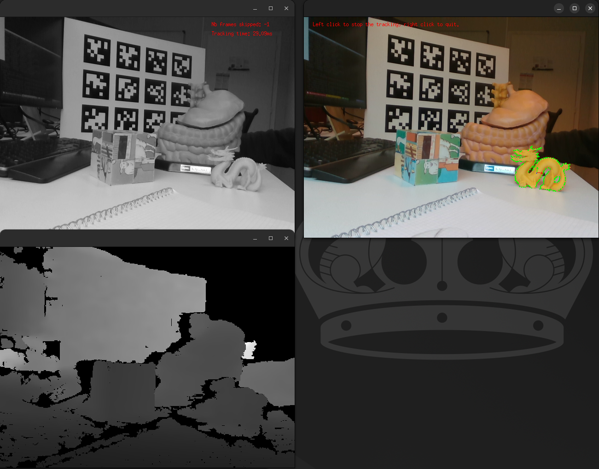

Render-Based Tracker (RBT) tutorial
This is a tutorial for the visp_rbt package. The documentation of the Render-Based Tracker (RBT) provided
by ViSP can be found here
ViSP documentation also provides step-by-step tutorials to progressively learn how to use the RBT
here .
Consequently, this tutorial will not focus on explaining the meaning of the different parameters of the
RBT, but instead focus on the specificities on how to use the visp_rbt package.
Tutorial using a recorded sequence
Purpose of this tutorial
The purpose of this tutorial is to show how to configure a visp_rbt node on a recorded sequence.
We begin with this setup because it is less prone to runtime errors, such as problems with a camera.
How to launch it
If you compiled the packages, you have to source the workspace in which you have compiled the packages.
Otherwise, if you installed the packages using the package manager, you only have to source the /opt/ros/${ROS_DISTRO}/setup.bash
file (or one of the other setup files if you are not using bash).
Then you can run:
ros2 launch visp_tk_tutorials rbt_bag_launch.py
The launch file accepts different arguments. To have the list and the explanations related to the arguments, please run:
ros2 launch visp_tk_tutorials rbt_bag_launch.py --show-args
You can for instance easily switch between the object to track thanks to the object_name launch argument.
|
Tracked features |
Configuration file |
|---|---|---|
|
Dense depth (
depth) and color silhouette(
silhouetteColor, CCD), with an object mask |
|
|
Dense depth (
depth) and color silhouette(
silhouetteColor, CCD), with an object mask |
|
|
Dense depth (
depth) and color silhouette(
silhouetteColor, CCD), with an object mask |
|
object_name only selects the 3D model and the initial pose of the object: the three objects use the same
default configuration file, which can be changed with the config_file launch argument
(see Using another configuration file below).
When you first start the launch file, you should see something similar to the following image:


After left clicking on the image, the tracker will be turned on. Be careful, you have to do it in less than 5 seconds, because we chose to publish the initial pose of the object to track in order to avoid the initialization from clicks. If you chose for instance to track the dragon, you should see something like the following image:


Afterwards, a left click will momentarily pause the tracker, while a right click will kill the node.
Using another configuration file
The features used by the RBT and their settings are given by a JSON configuration file, passed with the
config_file launch argument. It must be an absolute path. To use one of the configuration files installed
with the package, you can build this path with ros2 pkg prefix:
ros2 launch visp_tk_tutorials rbt_bag_launch.py \
config_file:=$(ros2 pkg prefix visp_tk_tutorials)/share/visp_tk_tutorials/config/rbt/configs/depth-klt.json
The following configuration files are provided in config/rbt/configs. The features are named after the
type key of the file, which is also the name displayed by the tracker in the Features: lines.
File |
Content |
|---|---|
|
Default. Depth (
depth) and color silhouette(
silhouetteColor, CCD), with an object segmentationmask that rejects the features lying on the background.
|
|
Same features as
depth-ccd-mask.json,without mask.
|
|
depth-ccd-mask.json with KLT keypoints (klt)tracked on the object texture.
|
|
Depth and KLT keypoints only, no silhouette.
|
|
Depth, KLT and moving edges along the silhouette
(
silhouetteMe), keeping one edge candidate per point. |
|
Same as
depth-klt-me-single.json,keeping 3 edge candidates per silhouette point.
|
|
Color silhouette (CCD) only:
does not require a depth stream.
|
|
Same as
ccd.json, with the color statisticssmoothed over time.
|
|
Tuned for the Orangina can,
see Using another object or configuration file below.
|
|
depth-klt-ccd-mask.json tuned to reducethe tracking time on the castle.
|
The parameters of these files, and the values that differ between them, are described in
config/rbt/configs/README.md.
If the file does not exist, the tracker cannot be initialized: the error config file ... does not exist
is displayed, the node stops and the launch file ends.
Code explanation
Let’s have a look at rbt_bag_launch.py. Because it is a fairly big file, we will study the parts
separately. Let’s first have a look to the generate_launch_description() method that is called
by the ros2 launch utilitary or by a call to IncludeLaunchDescription in another launch file:
103def generate_launch_description():
104 ## [Declaring launch arguments]
105 ld = LaunchDescription( [
106 ## [RBT arguments]
107 DeclareLaunchArgument(
108 'config_file',
109 description="Absolute path towards the JSON config file for the RBT",
110 default_value=PathJoinSubstitution(
111 [
112 FindPackageShare('visp_tk_tutorials'),
113 'config',
114 'rbt',
115 'configs',
116 'depth-ccd-mask.json'
117 ])
118 ),
119 DeclareLaunchArgument(
120 "depth_camera_info_topic_name",
121 description="Name of the depth camera topic.",
122 default_value="/camera_rgb/depth/camera_info"
123 ),
124 DeclareLaunchArgument(
125 "depth_image_topic_name",
126 description="Name of the depth stream topic.",
127 default_value="/camera_rgb/depth/image_raw"
128 ),
129 DeclareLaunchArgument(
130 "display_nb_frames_skipped",
131 description = "This parameter indicates the number of frames skipped during display",
132 default_value="-1"
133 ),
134 DeclareLaunchArgument(
135 "headless_mode",
136 description = "If True, the node will not display anything, expecting that another takes in charge the GUI.",
137 default_value="False"
138 ),
139 DeclareLaunchArgument(
140 'init_file',
141 description="Absolute path towards the `.init` file that indicates the clicks location to initialize the RBT",
142 default_value=PathJoinSubstitution(
143 [
144 FindPackageShare('visp_tk_tutorials'),
145 'config',
146 'rbt',
147 'models',
148 'dragon',
149 'dragon.init'
150 ])
151 ),
152 DeclareLaunchArgument(
153 "init_method",
154 description="Initialization method to initialize the tracker. Default method is initialization by click.",
155 default_value="topic"
156 ),
157 DeclareLaunchArgument(
158 "init_topic",
159 description="If the ``init_method`` is set to topic, this parameter becomes **REQUIRED** and must be set to the topic of type ``geometry_msgs:msg::PoseStamped`` the tracker must use to get the init pose.",
160 default_value=init_pose_topic_name
161 ),
162 DeclareLaunchArgument(
163 "rgb_camera_info_topic_name",
164 description="Name of the color camera topic.",
165 default_value="/camera_rgb/color/camera_info"
166 ),
167 DeclareLaunchArgument(
168 "rgb_image_topic_name",
169 description="Name of the color image topic.",
170 default_value="/camera_rgb/color/image_raw"
171 ),
172 DeclareLaunchArgument(
173 "stream_qos_depth",
174 description="The depth of the queue of both the RGB and depth image streams (they need to be the same) if depth is required.",
175 default_value="5"
176 ),
177 DeclareLaunchArgument(
178 "stream_qos_durability",
179 description="The durability of both the RGB and depth image streams (they need to be the same) if depth is required.",
180 default_value="volatile"
181 ),
182 DeclareLaunchArgument(
183 "stream_qos_reliability",
184 description="The reliability of both the RGB and depth image streams (they need to be the same) if depth is required.",
185 default_value="reliable"
186 ),
187 DeclareLaunchArgument(
188 "z_factor",
189 description="Factor to convert the depth image expressed as uint16_t into meters. For instance, if a value of ``1000`` in the raw depth image corresponds to ``1 meter``, the ``z_factor`` must be set to ``0.001``.",
190 default_value="0.001"
191 ),
192 DeclareLaunchArgument(
193 "frame_size_ratio",
194 description="Length of the axes of the displayed object frame, as a fraction of the object diameter (diagonal of the bounding box of the model, or of the tag). The axes are never shorter than 30 pixels.",
195 default_value="0.3"
196 ),
197 DeclareLaunchArgument(
198 "frame_thickness",
199 description="Thickness, in pixels, of the axes of the displayed object frame.",
200 default_value="2"
201 ),
202 ## [Sequence-player arguments]
203 DeclareLaunchArgument(
204 "object_name",
205 description="Name of the object to track in the sequence.",
206 default_value="dragon",
207 choices=["dragon","cube","stomach"]
208 ),
209 ## [Setting OpenMP environment variables]
210 SetEnvironmentVariable(name='GOMP_SPINCOUNT', value='0'), # To enable OpenMP acceleration
211 ])
212
213 ld.add_action(OpaqueFunction(function=handle_object_parameter))
214
215 return ld
As you can see, the generate_launch_description() method mostly declare the launch arguments and
register an OpaqueFunction object that will be called once the context of the launch file will
be known. However, it is important to notice that it also sets an OpenMP environment variable. It helps accelerate
the processing of depth images when the depth stream is used too and helps accelerate the tracker.
Here is a quick overview of the handle_object_parameter() function:
14def handle_object_parameter(context):
15 ## [Getting the values of the tracker-related launch arguments]
16 config_file = LaunchConfiguration("config_file")
17 depth_camera_info_topic_name = LaunchConfiguration("depth_camera_info_topic_name")
18 depth_image_topic_name = LaunchConfiguration("depth_image_topic_name")
19 display_nb_frames_skipped = LaunchConfiguration("display_nb_frames_skipped")
20 headless_mode = LaunchConfiguration("headless_mode")
21 init_file = LaunchConfiguration("init_file")
22 init_method = LaunchConfiguration("init_method")
23 init_topic = LaunchConfiguration("init_topic")
24 rgb_camera_info_topic_name = LaunchConfiguration("rgb_camera_info_topic_name")
25 rgb_image_topic_name = LaunchConfiguration("rgb_image_topic_name")
26 stream_qos_depth = LaunchConfiguration("stream_qos_depth")
27 stream_qos_durability = LaunchConfiguration("stream_qos_durability")
28 stream_qos_reliability = LaunchConfiguration("stream_qos_reliability")
29 z_factor = LaunchConfiguration("z_factor")
30 ## [Handling tracked object]
31 object_name = LaunchConfiguration("object_name").perform(context)
32 if object_name == "dragon":
33 model_file = "package://visp_tk_tutorials/config/rbt/models/dragon/dragon.obj"
34 elif object_name == "cube":
35 model_file = "package://visp_tk_tutorials/config/rbt/models/cube/cube.obj"
36 elif object_name == "stomach":
37 model_file = "package://visp_tk_tutorials/config/rbt/models/stomach/stomach.obj"
38 else:
39 raise RuntimeError(f"Unexpected object_name {object_name}")
40 ## [Sequence player]
41 sequence_folder = PathJoinSubstitution(
42 [FindPackageShare("visp_tk_tutorials"), "sequence"]
43 )
44 sequence_player = Node(
45 package='visp_tk_tutorials',
46 # namespace="rbt_ns",
47 executable='sequence_player_node',
48 name='sequence_player',
49 output='screen',
50 emulate_tty=True,
51 parameters=[
52 {'sequence_path' : sequence_folder},
53 {'object_name': object_name},
54 {'depth_image_topic_name': depth_image_topic_name},
55 {'depth_camera_info_topic_name':depth_camera_info_topic_name},
56 {'rgb_image_topic_name':rgb_image_topic_name},
57 {'rgb_camera_info_topic_name':rgb_camera_info_topic_name},
58 {'init_pose_topic_name': init_pose_topic_name}
59 ]
60 )
61 ## [RBT tracker node]
62 rbt_node = Node(
63 package='visp_rbt',
64 # namespace="rbt_ns",
65 executable='visp_rbt_node',
66 name='tracker_rbt',
67 output='screen',
68 emulate_tty=True,
69 parameters=[
70 {'config_file' : config_file},
71 {'depth_camera_info_topic_name' : depth_camera_info_topic_name},
72 {'depth_image_topic_name' : depth_image_topic_name},
73 {'display_nb_frames_skipped' : display_nb_frames_skipped},
74 {'headless_mode' : headless_mode},
75 {'init_file' : init_file},
76 {'init_method' : init_method},
77 {'init_topic' : init_topic},
78 {'model_file': model_file},
79 {'rgb_camera_info_topic_name' : rgb_camera_info_topic_name},
80 {'rgb_image_topic_name' : rgb_image_topic_name},
81 {'stream_qos_depth' : stream_qos_depth},
82 {'stream_qos_durability' : stream_qos_durability},
83 {'stream_qos_reliability' : stream_qos_reliability},
84 {'z_factor' : z_factor},
85 {'frame_size_ratio': ParameterValue(LaunchConfiguration('frame_size_ratio'), value_type=float)},
86 {'frame_thickness': ParameterValue(LaunchConfiguration('frame_thickness'), value_type=int)}
87 ]
88 )
89 ## [Shutdown-event handler]
90 shutdown_handler = RegisterEventHandler(
91 OnProcessExit(
92 target_action=rbt_node,
93 on_exit=[
94 LogInfo(msg=("The tracking node was closed, turning off the launch file")),
95 EmitEvent(event=Shutdown(
96 reason="tracking node closed"))
97 ]
98 )
99 )
100 ## [Returning launch description items]
101 return [sequence_player, rbt_node, shutdown_handler]
102
First, we get the launch arguments values:
15 ## [Getting the values of the tracker-related launch arguments]
16 config_file = LaunchConfiguration("config_file")
17 depth_camera_info_topic_name = LaunchConfiguration("depth_camera_info_topic_name")
18 depth_image_topic_name = LaunchConfiguration("depth_image_topic_name")
19 display_nb_frames_skipped = LaunchConfiguration("display_nb_frames_skipped")
20 headless_mode = LaunchConfiguration("headless_mode")
21 init_file = LaunchConfiguration("init_file")
22 init_method = LaunchConfiguration("init_method")
23 init_topic = LaunchConfiguration("init_topic")
24 rgb_camera_info_topic_name = LaunchConfiguration("rgb_camera_info_topic_name")
25 rgb_image_topic_name = LaunchConfiguration("rgb_image_topic_name")
26 stream_qos_depth = LaunchConfiguration("stream_qos_depth")
27 stream_qos_durability = LaunchConfiguration("stream_qos_durability")
28 stream_qos_reliability = LaunchConfiguration("stream_qos_reliability")
29 z_factor = LaunchConfiguration("z_factor")
Then, we chose the object model that will be used by the RBT node from the object_name launch arguments:
30 ## [Handling tracked object]
31 object_name = LaunchConfiguration("object_name").perform(context)
32 if object_name == "dragon":
33 model_file = "package://visp_tk_tutorials/config/rbt/models/dragon/dragon.obj"
34 elif object_name == "cube":
35 model_file = "package://visp_tk_tutorials/config/rbt/models/cube/cube.obj"
36 elif object_name == "stomach":
37 model_file = "package://visp_tk_tutorials/config/rbt/models/stomach/stomach.obj"
38 else:
39 raise RuntimeError(f"Unexpected object_name {object_name}")
Then, we create a node that will play the sequence, publishing the images, camera info and initial pose:
40 ## [Sequence player]
41 sequence_folder = PathJoinSubstitution(
42 [FindPackageShare("visp_tk_tutorials"), "sequence"]
43 )
44 sequence_player = Node(
45 package='visp_tk_tutorials',
46 # namespace="rbt_ns",
47 executable='sequence_player_node',
48 name='sequence_player',
49 output='screen',
50 emulate_tty=True,
51 parameters=[
52 {'sequence_path' : sequence_folder},
53 {'object_name': object_name},
54 {'depth_image_topic_name': depth_image_topic_name},
55 {'depth_camera_info_topic_name':depth_camera_info_topic_name},
56 {'rgb_image_topic_name':rgb_image_topic_name},
57 {'rgb_camera_info_topic_name':rgb_camera_info_topic_name},
58 {'init_pose_topic_name': init_pose_topic_name}
59 ]
60 )
Then, we instanciate the visp_rbt node, using the dictionnary that we previously filled:
61 ## [RBT tracker node]
62 rbt_node = Node(
63 package='visp_rbt',
64 # namespace="rbt_ns",
65 executable='visp_rbt_node',
66 name='tracker_rbt',
67 output='screen',
68 emulate_tty=True,
69 parameters=[
70 {'config_file' : config_file},
71 {'depth_camera_info_topic_name' : depth_camera_info_topic_name},
72 {'depth_image_topic_name' : depth_image_topic_name},
73 {'display_nb_frames_skipped' : display_nb_frames_skipped},
74 {'headless_mode' : headless_mode},
75 {'init_file' : init_file},
76 {'init_method' : init_method},
77 {'init_topic' : init_topic},
78 {'model_file': model_file},
79 {'rgb_camera_info_topic_name' : rgb_camera_info_topic_name},
80 {'rgb_image_topic_name' : rgb_image_topic_name},
81 {'stream_qos_depth' : stream_qos_depth},
82 {'stream_qos_durability' : stream_qos_durability},
83 {'stream_qos_reliability' : stream_qos_reliability},
84 {'z_factor' : z_factor},
85 {'frame_size_ratio': ParameterValue(LaunchConfiguration('frame_size_ratio'), value_type=float)},
86 {'frame_thickness': ParameterValue(LaunchConfiguration('frame_thickness'), value_type=int)}
87 ]
88 )
Finally, we ask to shutdown the whole launch file when the visp_rbt node dies:
89 ## [Shutdown-event handler]
90 shutdown_handler = RegisterEventHandler(
91 OnProcessExit(
92 target_action=rbt_node,
93 on_exit=[
94 LogInfo(msg=("The tracking node was closed, turning off the launch file")),
95 EmitEvent(event=Shutdown(
96 reason="tracking node closed"))
97 ]
98 )
99 )
Tutorial using a Realsense camera
Purpose of this tutorial
The purpose of this tutorial is to show how to configure a visp_rbt node when using an RGBD sensor.
We chose to use a Realsense RGBD sensor because it makes available a topic on which the depth image is
aligned with the color image, which is a requirement for the RBT.
How to launch it
If you compiled the packages, you have to source the workspace in which you have compiled the packages.
Otherwise, if you installed the packages using the package manager, you only have to source the /opt/ros/${ROS_DISTRO}/setup.bash
file (or one of the other setup files if you are not using bash).
Then you can run:
ros2 launch visp_tk_tutorials rbt_dragon_live_rs2_launch.py
The launch file accepts different arguments. To have the list and the explanations related to the arguments, please run:
ros2 launch visp_tk_tutorials rbt_dragon_live_rs2_launch.py --show-args
If nothing appears on screen, it may mean that the realsense_camera package changed the names of
the topic on which are published the data. Please run ros2 topic list and ros2 topic info -v /<camera_topic>
to check if the realsense_camera publisher and the tracker_rbt subscriber are both listed.
If not, please change the topic names accordingly.
Using another object or configuration file
rbt_orangina_live_rs2_launch.py tracks an Orangina can instead of the dragon. By default, it uses
orangina-depth-klt-ccd-mask.json, a configuration tuned for this object: since the can is symmetric around its
axis, the depth and silhouette features do not estimate the rotation around this axis, which is only given by the
KLT keypoints tracked on the label.
ros2 launch visp_tk_tutorials rbt_orangina_live_rs2_launch.py
rbt_teabox_live_rs2_launch.py tracks the teabox also used by the MBT tutorial, a box of
0.165 x 0.068 m and 0.08 m high. Its model config/rbt/models/teabox/teabox.obj is generated from the MBT model
teabox.cao, so that the same teabox.init file can be used. Since the box has no symmetry, it uses the default
configuration depth-ccd-mask.json.
ros2 launch visp_tk_tutorials rbt_teabox_live_rs2_launch.py
rbt_stomach_live_rs2_launch.py tracks the anatomical model of the stomach and intestines, standing on its base,
which is also tracked in the recorded sequence of rbt_bag_launch.py (object_name:=stomach). It also uses the
default configuration depth-ccd-mask.json.
ros2 launch visp_tk_tutorials rbt_stomach_live_rs2_launch.py
rbt_cube_live_rs2_launch.py tracks the textured cube, also tracked in the recorded sequence of
rbt_bag_launch.py (object_name:=cube). Since its faces are covered with drawings, it uses
depth-klt-ccd-mask.json, which adds KLT keypoints tracked on these textures to the depth and silhouette features.
The number of silhouette points is limited to 512, which keeps the tracking time at about 20 ms.
ros2 launch visp_tk_tutorials rbt_cube_live_rs2_launch.py
rbt_castle_live_rs2_launch.py tracks a textured model of a castle (config/rbt/models/castle/castle_rework.obj).
It uses castle-depth-klt-ccd-mask.json: the same features as for the cube, KLT keypoints being tracked on its
textured walls, but with fewer depth points and the color mask only computed around the object. With its long and very
jagged silhouette (battlements, towers), the tracking time is about 50 ms.
ros2 launch visp_tk_tutorials rbt_castle_live_rs2_launch.py
As with rbt_bag_launch.py, the JSON configuration file is given by the config_file launch argument.
It must be an absolute path, which can be built with
ros2 pkg prefix for the files installed with the package, for example:
ros2 launch visp_tk_tutorials rbt_orangina_live_rs2_launch.py \
config_file:=$(ros2 pkg prefix visp_tk_tutorials)/share/visp_tk_tutorials/config/rbt/configs/orangina-depth-klt-ccd-mask.json
The other provided configuration files are listed in Using another configuration file above. The 3D model and the
file giving the points to click at initialization can be changed in the same way, with the model_file and
init_file launch arguments.
Before starting the camera and the tracker, the live launch files check that the files given by
config_file, init_file and model_file exist. If one of them does not, the launch file ends
immediately with an explicit error, for example:
[ERROR] [launch]: Caught exception in launch (see debug for traceback): Launch argument 'config_file': file '/path/to/file.json' does not exist
Code explanation
We won’t give a detailed explanation of the tracker parameters, because nothing of importance changed compared to the previous launch file.
The main difference is that the RealSense driver (realsense2_camera::RealSenseNodeFactory) and the tracker
(visp_rbt::RBTTracker) are not started as two separate nodes, but loaded as components in the same
container, with intra-process communication enabled. The color and depth images (640x480, about 1 MB each)
are thus passed from the driver to the tracker without going through DDS, which would otherwise drop many of
these large messages and make the display jerky.
The container must be single-threaded (component_container, not component_container_mt): the Panda3D
OpenGL context and the ViSP displays used by the tracker must always be used from the thread that created them.
The same approach is used by rbt_orangina_live_rs2_launch.py, which tracks an Orangina can instead of the dragon.
Display of the object frame
When the tracking succeeds, the frame of the object is displayed on the image, with its X, Y and Z axes in red, green and blue. Its size and thickness can be changed with two launch arguments, accepted by all the launch files of this package:
Launch argument |
Default |
Meaning |
|---|---|---|
|
|
Length of the axes, as a fraction of the object diameter,
i.e. the diagonal of the bounding box of the 3D model.
The axes are never shorter than 30 pixels, so that they stay
readable when the object is far from the camera.
|
|
|
Thickness of the axes, in pixels.
|
rbt_stomach_live_rs2_launch.py and rbt_castle_live_rs2_launch.py set frame_size_ratio to 0.15:
the diagonal of the bounding box of these objects (about 35 cm for the stomach, 54 cm for the castle) overestimates
their apparent size.
For instance:
ros2 launch visp_tk_tutorials rbt_bag_launch.py frame_size_ratio:=0.2 frame_thickness:=3